アレルギーから肥満まで、多様な健康悩みに対応した診断を提供します
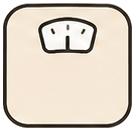
偏食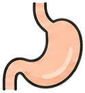
肥満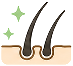
毛並み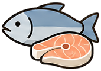
食欲不振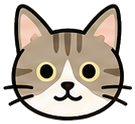
シニアケア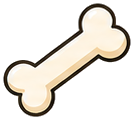
関節ケア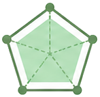
歯・口臭ケア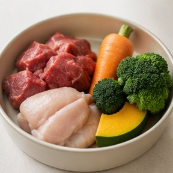
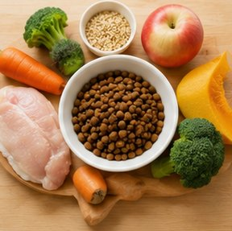
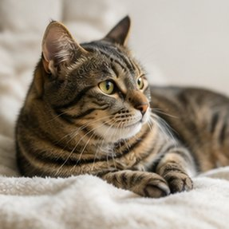
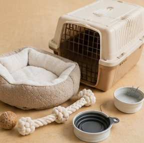
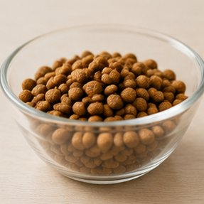
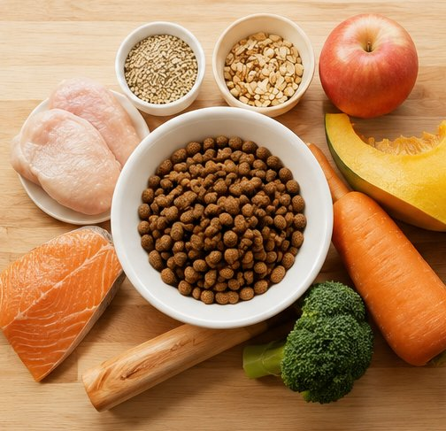
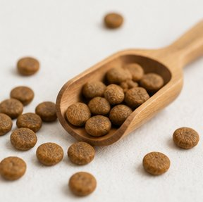
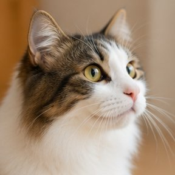
入力した情報は外部に送信されません。すべてブラウザ内で完結するため、大切なペットの情報が守られます。登録不要で即座に利用できます。
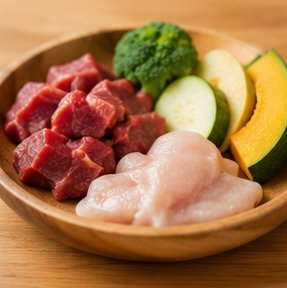
タンパク質・脂質・食物繊維・カルシウムなど5項目を radar chart で表示。愛ペットに何が足りないかが一目でわかります。
犬と猫を同時に診断して比較できます。複数のペットをまとめて管理できるので、多頭飼いの方にも最適です。
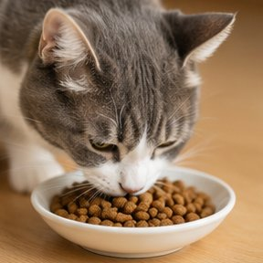
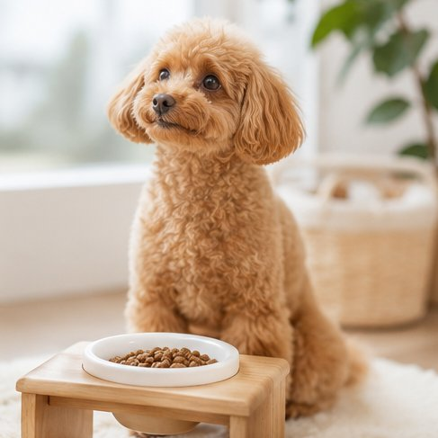
診断結果をQRコードやLINEでシェアできます。PDF保存・メール送信にも対応。獣医師に見せる際にも活用できます。
| 機能 | ペットフード 用品診断 |
フード 診断サイト |
ペット 専門サービス |
|---|---|---|---|
| 完全無料・登録不要 | ✓ | ✗ | ✗ |
| プライバシー重視（外部送信なし） | ✓ | ✗ | ✗ |
| 40以上の項目チェック | ✓ | ✗ | ✓ |
| 栄養成分比較チャート | ✓ | ✗ | ✗ |
| PDF/メール送信 | ✓ | ✗ | ✓ |
| 複数ペット同時診断 | ✓ | ✗ | ✗ |
使ってたフードが合ってなかったことがわかって、グレインフリーに変えたら毛並みが本当によくなりました！
うちの猫の腎臓ケアフードを探していました。診断で低リン食が推奨されて、獣医師にも見せたら「正解」と言われました。
登録不要で使えるのが最高。スマホで5分で終わります。結果をQRコードで保存して夫婦で共有できました。
無料・登録不要・プライバシー重視。5つの質問で最適なフードがわかります。
🐾 無料で診断する →